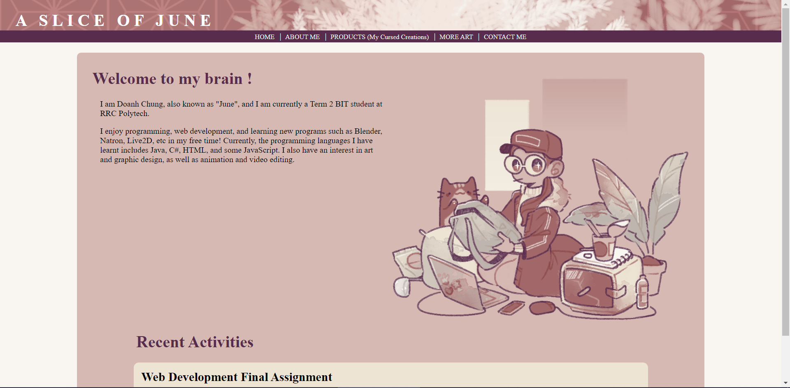
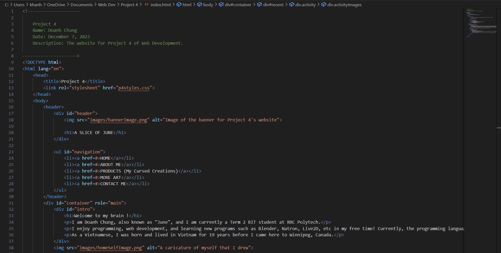
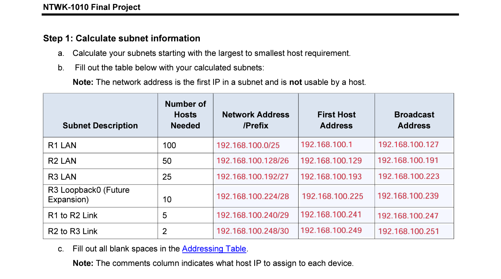
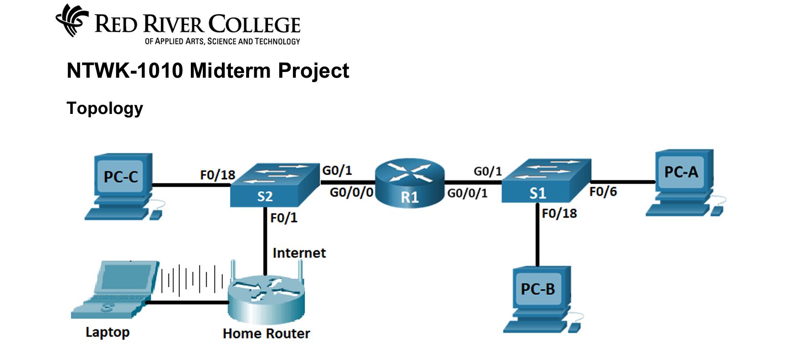

Recent Activities
Web Development Final Assignment
At the time of writing this, I am currently in my final weeks of Term 2. The final assignment for this course is to create a website from scratch. I look forward to seeing the end result of this endeavor.


Dated December 7, 2023
Network Computing Final Assignment
After taking the NTWK-1010 course, I have gotten a good handle on the concept of networks and device configuration, as well as security measure implementation.


Dated December 7, 2023